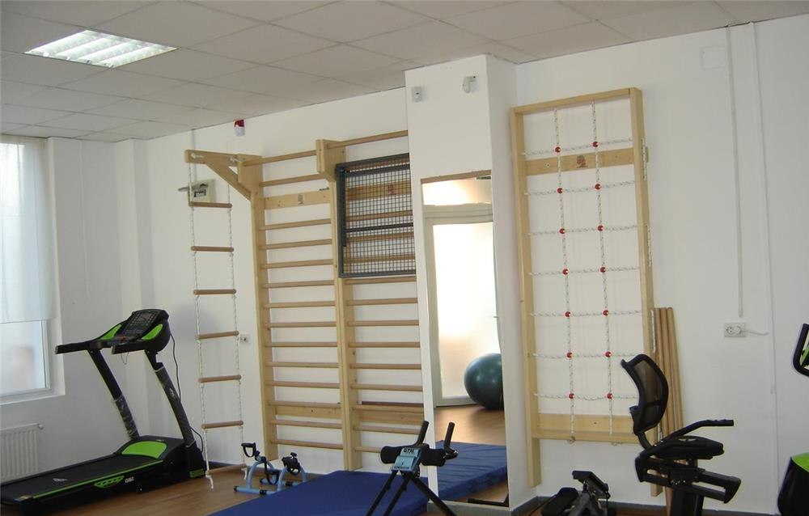
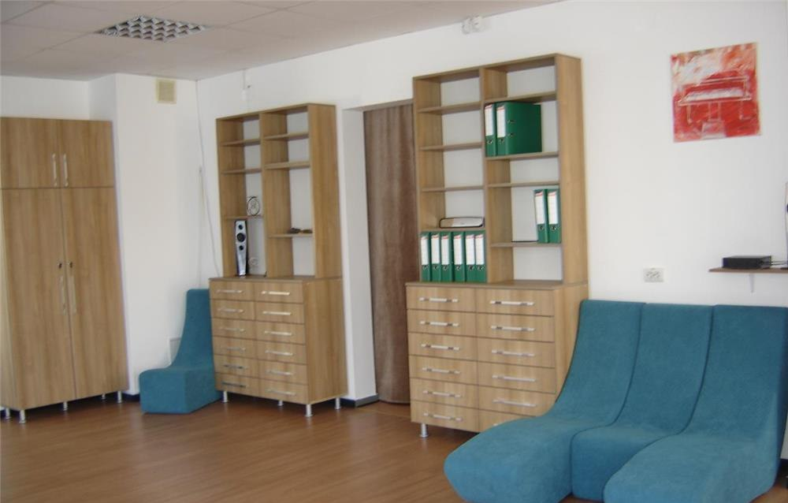
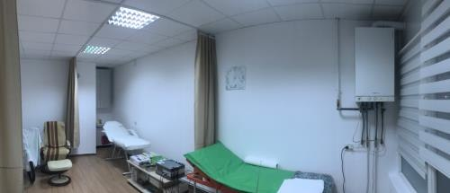

Plan personalizat
Fiecare parcurs pornește de la o evaluare atentă a mobilității, a durerii și a obiectivelor tale.
Centru de recuperare medicală · Cluj-Napoca
Kinetoterapie, fizioterapie, masaj și terapii complementare, într-un plan construit în jurul nevoilor tale — de la prima evaluare până la exercițiile pe care le faci acasă.



Despre VitareiKineto
Mișcarea stă la baza întregii noastre existențe. O bună mobilitate ne face mai sănătoși, mai puternici și ne redă încrederea în sine.
VitareiKineto este un centru terapeutic de restabilire a stării de bine — fie că vorbim de mobilitatea fizică sau de echilibrul emoțional — prin metode non-invazive și relaxante, care au ca scop creșterea calității vieții.
Credem că fiecare persoană merită un spațiu care oferă siguranță, confort și încredere, pentru a-și regăsi zâmbetul.
„Ne tratăm pacienții așa cum ne-am dori noi înșine să fim tratați.”
De ce să ne alegi
Fiecare parcurs pornește de la o evaluare atentă a mobilității, a durerii și a obiectivelor tale.
Combinăm kinetoterapia, fizioterapia și masajul cu terapii complementare, pentru rezultate durabile.
TECAR, electroterapie, magnetoterapie și o sală complet echipată pentru kinetoterapie.
Înveți exerciții pe care le poți continua acasă, ca progresul să nu se oprească după ședință.
Servicii
Alege un serviciu pentru detalii. Dacă nu știi de unde să începi, evaluarea inițială te ajută să afli ce ți se potrivește.
Cum decurge
Ne suni și stabilim împreună ziua și ora potrivite pentru tine.
Discutăm istoricul, simptomele și obiectivele, apoi evaluăm postura și mobilitatea.
Primești recomandarea de terapii, numărul de ședințe și tariful estimat.
Lucrăm împreună, urmărim progresul și îți dăm exerciții pentru acasă.
Metoda VitaReiKineto
Un program complet, în șase etape, care îmbină terapiile fizice cu cele de relaxare și echilibrare. Majoritatea exercițiilor pe care le înveți pe parcursul metodei le poți aplica și acasă.
„Cel mai greu lucru de păstrat e echilibrul.” — Jean Grenier
Permite terapeuților să personalizeze parcursul conform necesităților tale.
Determină reacții vasculare, biochimice și de stimulare senzitivă, în scop terapeutic și recuperator.
Terapie noninvazivă prin transfer energetic capacitiv și rezistiv, cu o senzație plăcută de căldură.
Programe structurate pentru rezistență, mobilitate și forță, adaptate vârstei și obiectivelor.
Ședințe de meditație pentru consolidarea echilibrului, plus sfaturi de nutriție sănătoasă.
Metodă japoneză de echilibrare energetică, pentru relaxare profundă și stare de bine.
Programul și tariful se stabilesc după evaluarea inițială, în funcție de obiectivele tale. Abordarea noastră este complementară și nu înlocuiește consultul, diagnosticul sau tratamentul recomandat de medicul specialist.
Programează evaluareaEchipa
Lucrăm cu răbdare și empatie, cu experiență în kinetoterapie și în terapiile complementare.
Kinetoterapeut · Terapeut Reiki
Absolvent al specializării de licență Kinetoterapie și motricitate specială și al masteratului Kinetoterapie în afecțiunile aparatului locomotor, la Facultatea de Educație Fizică și Sport a Universității Babeș-Bolyai din Cluj-Napoca.
A dezvoltat o abordare integrată, completând kinetoterapia cu terapii complementare. Experiența din ambele domenii îi permite să abordeze fiecare pacient în mod personal și să ofere soluții de recuperare cu efecte pe termen lung.
Tarife
Toate tarifele sunt exprimate în lei. Pentru un plan complet de terapie, abonamentele sunt varianta cea mai avantajoasă.
Galerie
Sala de kinetoterapie, cabinetele de fizioterapie și masaj și zona de relaxare a centrului.
Echipamente
Aparatură aleasă pentru terapii moderne și recuperare funcțională, folosită în condiții sigure, conform protocolului stabilit de terapeut.
Indicațiile și contraindicațiile fiecărei terapii se stabilesc la evaluare, împreună cu terapeutul.
Întrebări frecvente
Nu ai găsit ce căutai? Sună-ne și îți răspundem cu drag.
0745 613 008Cel mai simplu este să ne suni la 0745 613 008 sau 0364 882 136. Ne poți scrie și pe e-mail sau prin formularul de contact, iar noi revenim cu o propunere de programare.
Recomandăm evaluarea inițială. Pe baza ei, terapeutul îți propune combinația potrivită de terapii și numărul de ședințe necesare.
Haine comode, în care te poți mișca ușor, și — dacă le ai — investigațiile medicale recente (radiografii, RMN, scrisori medicale) sau recomandarea medicului.
Între 20 și 60 de minute, în funcție de terapie. Durata fiecărui serviciu este afișată în lista de tarife.
Da. Avem abonamente pentru masaj (5 + 1 ședință gratuită), kinetoterapie de întreținere și pachete combinate kinetoterapie + masaj.
Da. Oferim kinetoterapie pentru copii, gimnastică pentru nou-născuți, gimnastică pentru gravide și masaj prenatal.
Contact
Ai întrebări sau vrei să afli ce terapie ți se potrivește? Suntem aici să te ajutăm.